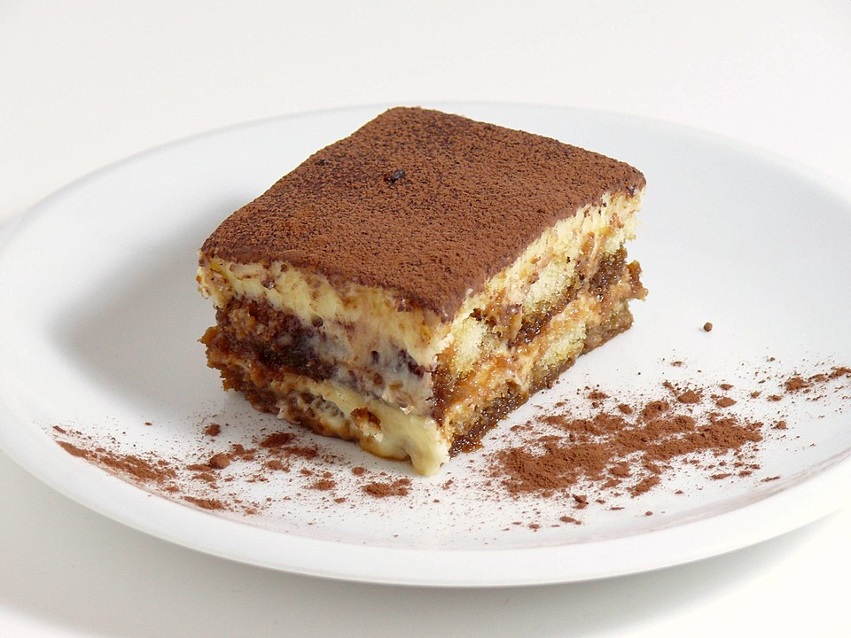

Tiramisu Recipe

“Tiramisù” by Raffaele Diomede, CC BY 2.0
Περιγραφή
Υλικά
- Mascarpone 500γρ
- Κρεμα Γάλακτος 400γρ (Εναλλακτικά Ασπραδια Αυγών 6)
- Κρόκοι Αυγών 6
- Ζαχαρη 150γρ (+ 1-2 κουταλιες για τον καφε)
- Σαβαγιαρ 400γρ
- Καφες (2 διπλες δοσεις Μοκκα)
- Κακάο ~2 κουταλιές της σουπας
- Βανιλια ~1κγ
- Αλάτι 1 πρεζα
- (Προερετικά Ρούμι/Μπραντι/Λικερ/Μαρσαλα 1 σφηνάκι)
Βήματα
Για την Κρέμα
- Σε μια μπεν μαρί βαζουμε τους κροκους με την ζάχαρη και ανακατεύουμε με ενα μιξερ χειρος για 2-3 λεπτα, μεχρι το μείγμα να ομογενοποιηθεί και να διπλασιαστεί σε ποσοτητα
- Χτυπαμε το μασκαρπόνε και περιπου ενα λεπτο μεχρι να γινει κρεμώδες, προσθετουμε το μειγμα με τους κροκους, μια μικρή πρεζα αλατι και μια σταγόνα βανίλια (και προαιρετικά λίγο αλκοόλ) και ανακατευουμε μεχρι να ομογενοποιηθούν
- Χτυπαμε την κρεμα γάλακτος μέχρι να πήξει, πριν φτάσει στο στάδιο να γίνει σαντιγί
- Προσθετουμε στο αρχικό μας μείγμα την κρεμα γαλακτος σε 3 δόσεις, ανακατεύοντας απαλα με μια σπάτουλα
Για το Γλυκό
- Φτιάχνουμε καφέ μοκκα (4 δόσεις), προσθέτουμε λιγη ζαχαρη (και προαιρετικά λίγο κακάο ή/και αλκοολ) και αραιώνουμε με κρύο νερο
- Βουτάμε τα σαβαγιάρ στον καφε και απ’ τις δυο πλευρες για 1-2 δευτερολεπτα σύνολο και τα βάζουμε στο σκεύος μέχρι να γεμίσει ο πατος
- Προσθετουμε την μισή κρέμα μας και την απλώνουμε
- Επαναλαμβανουμε για μια δεύτερη στρώση απο σαβαγιαρ και την υπόλοιπη κρέμα
- Πασπαλίζουμε με κακάο
- Βάζουμε στο ψυγείο για τουλάχιστον 6 ωρες πριν σερβίρουμε
Home